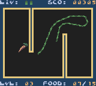

Available
- Source codes
- Other programs
These sourcecodes may provide you with some help when coding. If you use them in your programs, or want to release a modified version of them, please contact us first!
| Description |
Platform |
Wrath of Zalthar
I started with this RPG quite some time ago. Maybe you want to add some stuff (enemies, story)? Give it a go! Features grayscale graphics.
| TI-85
|
Planejump II
Planejump II still lacks some features, like link play or Usgard support. Get the source code and see what you can do!
| TI-85
|
3D rotating Torus
This code shows how to do realtime 3D rotation on a TI-86!
| TI-86
|
WinLib/WinShell
The source code of the popular WinShell and WinLib for Usgard. Never got it quite working. Maybe you want to give it a go?
| TI-85
|
M.C.Mik episode #1

M.C.Mik was the first game that ressembled a jump'n'run for the TI-85. This is the source code for the Usgard version. As it's one of my earlier programming attempts, it's not that optimized at all.
| TI-85
|
Currently, the only other program available is for the GameBoy Color.
| Description |
Notes |
Willy Wonderworm GBC (0.95)
In this small game, a port of the TI-86's Peaworm, you have to guide a worm through a room, and help him to eat various food in order for him to get longer. The game features 5 levels, color graphics, hi score table and music/sound fx. |
Catridge: MBC5, 32 KByte ROM + 8 KByte extra RAM |
|
|
|
![[Icarus Productions] - Click for main page](img/iplogo.gif)